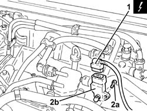

1060G16 PRESSURE RELIEF SENSOR - R R
- Path
- Procedures > 10 ENGINE UNIT > 1060 DIESEL INJECTION SYSTEM > 1060G PRESSURE PUMP ELECTRIC CONTROL > 1060G16 PRESSURE RELIEF SENSOR - R R
- Kind
- repair procedure (removal / refitting; the operation number is the code)
- Applies to
- engines: 1.9 JTD 16V; all production periods
- Interactive page
- https://sloeber94.github.io/elrnDB-aGt/en/#/125001049
Applies to: engines: 1.9 JTD 16V; all production periods
 Removing
Removing
 Refitting
RefittingEnsure that the ignition key is in the OFF position, then disconnect the negative battery terminal (-).
Name | Connector | |
|---|---|---|
- | Battery | See A1B BATTERY ( BATTERY NEGATIVE ) |
Proceed with removal
- 1016A10 sound-proofing cover - r + r
1. Disconnect the electrical connection from the excess pressure sensor.
2. Undo the bolt (2a), remove the excess pressure sensor (2b).
Name | Connector | |
|---|---|---|
1 | Turbocharging sensor | See K82 TURBOCHARGING SENSOR |

Applies to: engines: 1.9 JTD 16V; all production periods
Refitting
RemovingReplace the excess pressure sensor in its housing and fix it using the bolt.
Connect the electrical connection to the excess pressure sensor.
Proceed with refitting
- 1016A10 sound-proofing cover - r + r
.
Connect the negative (-) battery terminal